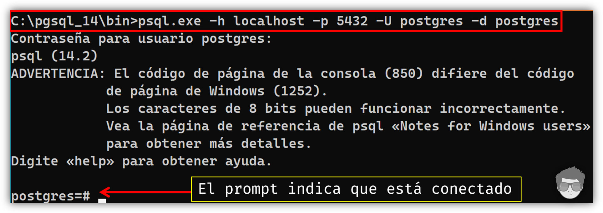

PSQL: CLIENTE DE LÍNEA DE COMANDOS
CONTENIDO

INTRODUCCIÓN
psql es una aplicación cliente que viene incluido en el paquete de instalación de PostgreSQL regular y está basado en la terminal. Nos permite establecer una conexión a un servidor de PostgreSQL donde debemos pasar los argumentos de conexión correctamente en la línea de comandos, establecida la conexión se abre una sesión donde podemos interactuar con consultas SQL y enviarlas a nuestro servidor de PostgreSQL y visualizar los resultados. Además, psql proporciona una serie de matacomandos y varias funciones similares a las de un shell común y tradicional para facilitar la escritura de scripts y la automatización de una amplia variedad de tareas.
CONECTARSE AL SERVIDOR
Para conectarse al servidor, se necesita saber el nombre de la base de datos de destino, el nombre de host, puerto del servidor, etc., y con que nombre de usuario desea conectarse. Se puede informar a psql sobre esos parámetros a través de las opciones de la línea de comandos
Ej: (host, usuario, puerto, etc).
psql -h localhost -U postgres -d dbname
Si se encuentra un argumento que no pertenece a ninguna opción, se interpretará como el nombre de la base de datos (o el nombre de usuario, si el nombre de la base de datos ya está dado). No todas estas opciones son obligatorias; hay valores predeterminados útiles.
Si omite el nombre de host, psql se conectará a través de un socket de dominio Unix a un servidor en el host local, o a través de TCP/IP a localhost.
El número de puerto predeterminado se determina en tiempo de compilación. Dado que el servidor de la base de datos utiliza el mismo valor predeterminado 5432, no tendrá que especificar el puerto en la mayoría de los casos.
El nombre de usuario predeterminado es el nombre de usuario de su sistema operativo, al igual que el nombre de la base de datos predeterminada.

NOTA: Tenga en cuenta que no puede simplemente conectarse a cualquier base de datos con cualquier nombre de usuario. El usuario que desea conectarse debe tener los permisos previamente creados por el administrador del sistema de base de datos.
Cuando los valores predeterminado no son del todo correctos, puede ahorrarse algo de escritura configurando las siguientes variables de entorno:
WINDOWS CMD
- PGUSER
setx PGUSER postgres
- PGPASSWORD
setx PGPASSWORD su_password

LINUX BASH
- PGUSER
export PGUSER postgres
- PGPASSWORD
export PGPASSWORD su_password
Opciones de línea de comandos
Este herramiente de línea de comandos acepta las siguientes opciones al momento de invocarla:
Empleo:
psql [OPCIONES]... [BASE-DE-DATOS [USUARIO]]
Opciones generales:
-c, --command=ORDEN
ejecutar sólo una orden (SQL o interna) y salir
-d, --dbname=NOMBRE
nombre de base de datos a conectarse (por omisión: «postgres»)
-f, --file=ARCHIVO
ejecutar órdenes desde archivo, luego salir
-l, --list
listar bases de datos, luego salir
-v, --set=, --variable=NOMBRE=VALOR
definir variable de psql NOMBRE a VALOR (p.ej. -v ON_ERROR_STOP=1)
-V, --version
mostrar información de versión, luego salir
-X, --no-psqlrc
no leer archivo de configuración (~/.psqlrc)
-1 («uno»), --single-transaction
ejecuta órdenes en una única transacción
-?, --help[=opcs]
mostrar esta ayuda, luego salir
--help=commands
listar órdenes backslash, luego salir
--help=variables
listar variables especiales, luego salir
Opciones de entrada y salida:
-a, --echo-all
mostrar las órdenes del script
-b, --echo-errors
mostrar órdenes fallidas
-e, --echo-queries
mostrar órdenes enviadas al servidor
-E, --echo-hidden
mostrar consultas generadas por órdenes internas
-L, --log-file=ARCHIVO
envía el registro de la sesión a un archivo
-n, --no-readline
deshabilitar edición de línea de órdenes (readline)
-o, --output=ARCHIVO
enviar resultados de consultas a archivo (u |orden)
-q, --quiet
modo silencioso (sin mensajes, sólo resultados)
-s, --single-step
modo paso a paso (confirmar cada consulta)
-S, --single-line
modo de líneas (fin de línea termina la orden SQL)
Opciones de formato de salida:
-A, --no-align
modo de salida desalineado
--csv
modo de salida de tabla CSV (valores separados por comas)
-F, --field-separator=CADENA
separador de campos para salida desalineada (por omisión: «|»)
-H, --html
modo de salida en tablas HTML
-P, --pset=VAR[=ARG]
definir opción de impresión VAR en ARG (ver orden \pset)
-R, --record-separator=CADENA
separador de registros para salida desalineada (por omisión: salto de línea)
-t, --tuples-only
sólo muestra registros
-T, --table-attr=TEXTO
definir atributos de marcas de tabla HTML (ancho, borde)
-x, --expanded
activar modo expandido de salida de tablas
-z, --field-separator-zero
definir separador de campos para salida desalineada al byte cero
-0, --record-separator-zero
definir separador de filas para salida desalineada al byte cero
Opciones de conexión:
-h, --host=NOMBRE
nombre del anfitrión o directorio de socket (por omisión: «socket local»)
-p, --port=PUERTO
puerto del servidor (por omisión: «5432»)
-U, --username=NOMBRE
nombre de usuario (por omisión: «postgres»)
-w, --no-password
nunca pedir contraseña
-W, --password
forzar petición de contraseña (debería ser automático)
Meta-commands
Cualquier cosa que ingrese en psql que comience con una barra invertida \ sin
comillas es un metacomando de psql que es procesado por psql mismo. Estos comandos hacen que
psql sea más útil para la administración o la creación de scripts. Podemos ver algunos en la
siguiente tabla:
| Comando | Descripción |
|---|---|
| \a | Activa | Desactiva el formato alineado de la tabla. |
| \C [title] | Establece | Anula el título de las tablas que se imprimen en los resultados de una consulta. |
| \cd [directory] | Cambia el directorio de trabajo actual a [directory]. Sin argumentos, cambia el directorio de inicio del usuario actual. |
| \conninfo | Muestra información sobre la conexión de base de datos actual. |
| \copyright | Muestra información sobre la licencia del producto. |
| \echo [text] | Imprime los argumentos evaluados en la salida estándar, separados por espacios y seguidos de una nueva línea. Si se utiliza el texto entre acentos graves se interpretará como un comando de shell. |
| \timing | Activa | Desactiva la visualización del tiempo en milisegundos que tarda cada instrucción SQL. |
| \x | Activa | Desactiva el formato de tabla expandido en el resultado de cada instrucción SQL. |
| \h - \help [comando] | Brinda ayuda de sintaxis en el comando SQL especificado. |
| \H - \html | Activa | Desactiva el formato de salida de consulta HTML. |
| \! [comando] | Permite ejecutar [comando] de la shell de Linux o de CMD de windows desde la propia consola de psql. |
| \l[+] \list[+] [pattern] |
Muestra un listado de las bases de datos que existen en la instancia del servidor PostgreSQL junto a sus nombres, propietarios, propietarios, juego de caracteres y privilegios de acceso. Si se especifica un [pattern], si se listan las bases de datos cuyo nombre coincidan con el patrón. Si se agrega el símbolo "+", también se muestran los tamaños de las bases de datos, los tablespace y las descripciones |
| \o \out [filename] |
Permite guardar el resultado de las futuras consultas en el archivo [filename]. El resultado incluye todas las tablas , respuestas de comandos y mensajes de tipo "notices" del servidor, pero no los mensajes de error. |
| \pset [option [value]] |
Este comando establece opciones que afectan la salida de los resultados. [option] indica que opción se va a configurar y [value] varía según la opción seleccionada. |